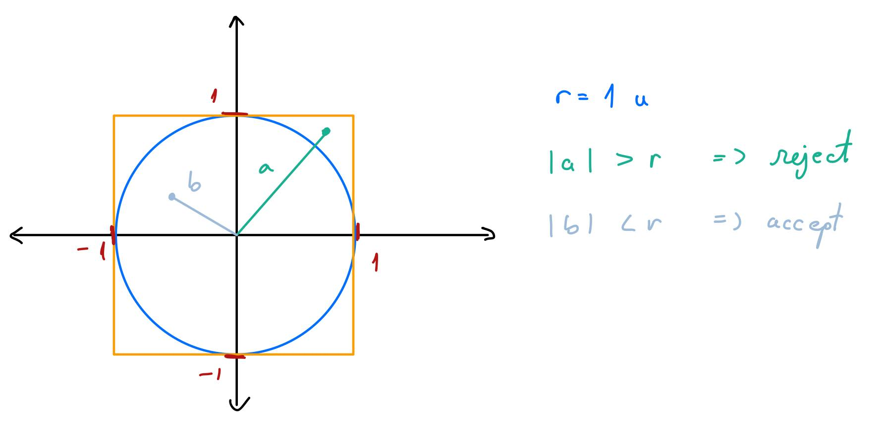

Searching for Pi
Alin Morariu
26/03/2021
A classic exercise when learning how to use Monte Carlo simulations (or just simulations in general) is to find pi – yes, this \(\pi\). As we all know from our elementary level mathematics courses, pi is the ratio of the circle’s diameter to its radius or the ratio of the circle’s area to the area of a square with sides of the same length as the circle’s radius. That second fact is actually what we will take advantage of in order to do this simulation. Measuring the area of a circle is a difficult task to do empircally so a computer simulation is a useful tool to determine pi to a sufficient degree of precision.
This post will explore the thinking process behind a bsic rejection sampling scheme that will converge to \(\pi\). The main idea here is that we will use random number generation and some clever mathematical tricks to find the area of the circle to an arbitrary degree of precision.
1 Mathematical motivation
To motivate this simulation, we need to understand the mathematical formulation which we are interested in. Recall the formula for the area of a circle: \[\begin{equation} A = \pi r^2 \end{equation}\] Where \(A\) is the area and \(r\) is the radius (both measured in the same arbitrary unit). This formula can be rewritten as \(\pi = \frac{A}{r^2}\) (which will be the basis of our sampling scheme).
2 What is sampling?
In statistics, we often use Monte Carlo methods to solve deterministic problems. They’re particularly useful when standard numerical methods don’t work. We will be taking advantage of sampling from probability distributions to solve this problem. This random number generation will be part of a larger algorithm which when combined with a rejection criterion/condition, will be useful to numerically determine the value of \(\pi\).
3 When do you reject?
When creating a rejection sampling algorithm, one of the key choices is exactly what the rejection criterion is. For this specific problem we turn to a geometric solution. Begin by drawing a unit circle on a pair of axes. Next, we inscribe this unit circle inside of a square such that the square touches the circle at the points \(\{(1,0), (0,1), (-1,0), (0,-1) \}\) (see Figure 1). With this configuration, the area of the square is easily determined by the formula \[\begin{align} A_{\Box} &= l^2 = (2r)^2 = 4r^2 \\ &=_{r = 1} 4 \end{align}\] The next step is to start using random sampling to generate ordered pairs of \((x,y)\) coordinates on the plane we have created. An easy way to do this is to let each axis represent a random variable drawn from a uniform distribution on \((-1,1)\). \[\begin{align} X &\sim Unif(-1,1) \\ Y &\sim Unif(-1,1) \end{align}\] We sample each uniform random variable \(n\) many times and create a sequence of vectors \(\{ (x_i, y_i): i = 1, \ldots, n \}\). The rejection critera will be to determine if these points lie inside the circle and the square or if they lie only within the square. This is determined by computing the length of each vector \((x_i, y_i)\) and comparing to the radius (of fixed length 1). Vectors with length above 1 are rejected while vectors with length less than or equal to 1 are accepted (since they are within the circle).
Figure 1: Geometric motivation for rejection sampling scheme to discover pi
4 Finding Pi
Once we have this rejection criteria and have completed the sampling, it’s time to put it all together to get our estimate of \(\pi\). This is based directly off of the proportion of accepted points \(p\) which is calculated by the formula \[\begin{equation} p = \frac{n_{accept}}{n_{accept} + n_{reject}} = \frac{n_{accept}}{n} \end{equation}\] Recall from earlier that \(\pi = \frac{A_{\bigcirc}}{r^2}\). Since this is a unit circle, the radius 1 and this formula simplifies to \(\pi = \frac{A_{\bigcirc}}{1^2} = A_{\bigcirc}\). In addition, our sampling scheme allows us to discover the proportion of points that are in the circle versus the square so we get that \(A_{\bigcirc} = A_{\Box} \cdot p\). The final step is that \(\pi = A_{\Box} \cdot p\) which completes our Monte Carlo simulation.
5 Implementation
N <- 500000
X <- c()
Y <- c()
L <- c()
accept<- c()
for (ii in c(1:N)) {
# Sample X and Y
X[ii] <- runif(n = 1, min = -1, max = 1)
Y[ii] <- runif(n = 1, min = -1, max = 1)
# compute length
L[ii] <- sqrt( X[ii]^2 + Y[ii]^2 )
# determine accept-reject
accept[ii] <- ifelse(L[ii] <= 1, 1, 0)
}
# Conclusion
p <- sum(accept)/N
pi <- 4*pLet’s take a look at the results of our simulation.
df <- tibble(X, Y, L, accept)
cut_offs <- c(1000, 5000, 10000, N)
plt_1 <- df %>% sample_n(cut_offs[1]) %>%
ggplot(aes(x = X, y = Y)) +
geom_point(aes(colour = factor(accept)), alpha = 0.7) +
labs(title = 'Monte Carlo Simulation for Pi',
subtitle = "N = 1000") +
scale_colour_manual(values=c("#DE0101", "#1AA711"),
name = "Sampling Result",
labels = c("Reject", "Accept"))+
theme_minimal()
plt_2 <- df %>% sample_n(cut_offs[2]) %>%
ggplot(aes(x = X, y = Y)) +
geom_point(aes(colour = factor(accept)), alpha = 0.7) +
labs(title = 'Monte Carlo Simulation for Pi',
subtitle = "N = 5000") +
scale_colour_manual(values=c("#DE0101", "#1AA711"),
name = "Sampling Result",
labels = c("Reject", "Accept"))+
theme_minimal()
plt_3 <- df %>% sample_n(cut_offs[3]) %>%
ggplot(aes(x = X, y = Y)) +
geom_point(aes(colour = factor(accept)), alpha = 0.7) +
labs(title = 'Monte Carlo Simulation for Pi',
subtitle = "N = 10000") +
scale_colour_manual(values=c("#DE0101", "#1AA711"),
name = "Sampling Result",
labels = c("Reject", "Accept"))+
theme_minimal()
plt_4 <- df %>% sample_n(cut_offs[4]) %>%
ggplot(aes(x = X, y = Y)) +
geom_point(aes(colour = factor(accept)), alpha = 0.7) +
labs(title = 'Monte Carlo Simulation for Pi',
subtitle = "N = 50000") +
scale_colour_manual(values = c("#DE0101", "#1AA711"),
name = "Sampling Result",
labels = c("Reject", "Accept"))+
theme_minimal()
# grid.arrange(plt_1, plt_2, plt_3, plt_4,
# nrow =2,
# top = "Monte Carlo Simulation")
plt_1
plt_2
plt_3
plt_4 Based on the plots above, we can see that when the number of points increases the circle and square get more and more pronounced. This goes hand in hand with the accuracy of the the estimate of \(\pi\). The results are that pi = \(\pi =\) 3.138384 based on the accept proportion of 0.784596.
Based on the plots above, we can see that when the number of points increases the circle and square get more and more pronounced. This goes hand in hand with the accuracy of the the estimate of \(\pi\). The results are that pi = \(\pi =\) 3.138384 based on the accept proportion of 0.784596.
Hope you enjoyed this walk through! For more simulation exercise, check out the Bayesian Time Series post.